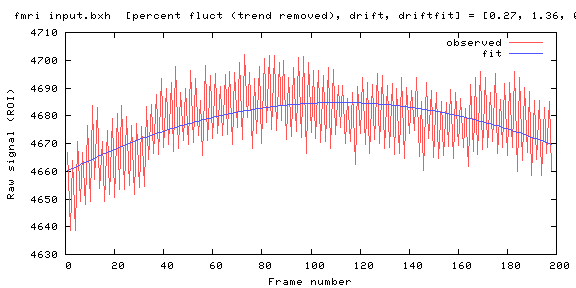
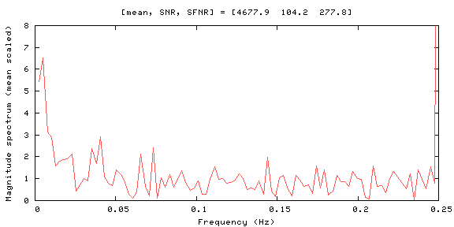
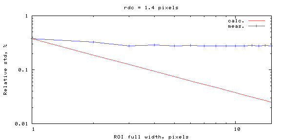
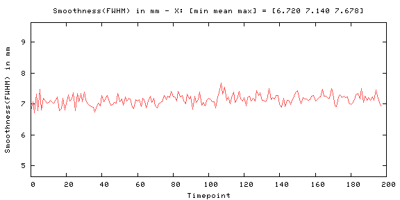
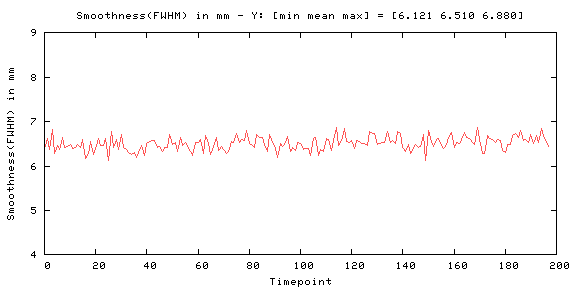
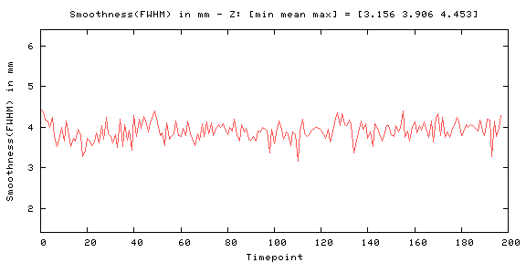
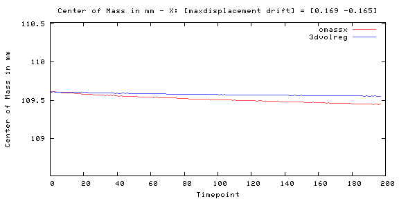
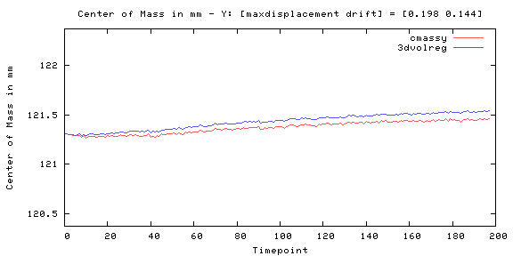
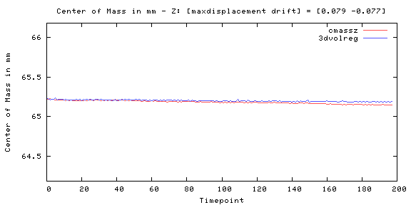
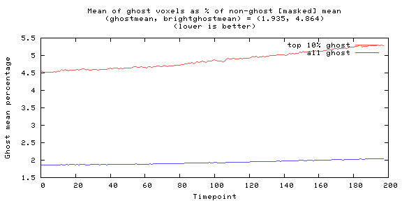
Odd-even difference image
| -18468 | 17441 |
| image min: -18468, image max: 17441 |
| 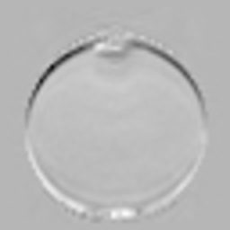 |
Mean image
| 0 | 7936.79 |
|
|
|
| image min: 0, image max: 7936.79 |
Standard Deviation image
| 0 | 101.286 |

|
|
| image min: 0, image max: 101.286 |
| 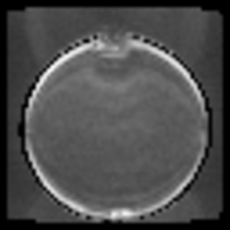 |
SFNR image
| 0 | 609.419 |
| image min: 0, image max: 609.419 |
| 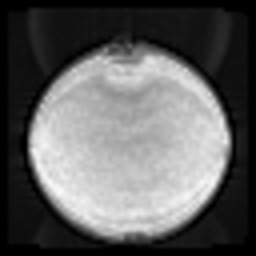 |
Acquisition parameters
| dimensions | 64x64x27x200 |
| spacing | 3.4375mmx3.4375mmx5mmx2000ms |
| gap | 0mmx0mmx1mmx0ms |
| examnumber | 1811 |
| studyid | Premier_21Ch_073120 |
| seriesnumber | 2 |
| runnumber | 1 |
| institution | MCW Premier |
| protocolname | QA MR Premier_21Ch |
| psdname | epiRT |
| psdinternalname | EPI |
| psddate | 2018-12-11 |
| psdtime | 05:33:46 |
| scandate | 2020-07-31 |
| scantime | 14:18:49 |
| scannermanufacturer | GE MEDICAL SYSTEMS |
| scanner | MCWPREM |
| examdescription | PremierQA |
| description | FATES_EPI_RUN |
| operator | 7 |
| scannermodelname | SIGNA Premier |
| scanningsequence | EP/GR |
| sequencevariant | SS |
| scanoptions | SAT_GEMS/EPI_GEMS/FS |
| mracquisitiontype | 2D |
| angioflag | N |
| numaverages | 1 |
| imagingfrequency | 127.772463 |
| imagednucleus | 1H |
| spacingbetweenslices | 5 |
| echotrainlength | 1 |
| percentsampling | 100 |
| percentphasefieldofview | 100 |
| scannerserialnumber | 00000000FLORIO1X |
| softwareversions | 27 |
| beatrejectionflag | Y |
| heartrate | 0 |
| cardiacnumberofimages | 0 |
| triggerwindow | 0 |
| reconstructiondiameter | 220 |
| receivecoilname | 21HN |
| inplanephaseencodingdirection | COL |
| flipangle | 90 |
| variableflipangleflag | N |
| sar | 0.0592344 |
| acquisitionnumber | 1 |
| instancenumber | 1 |
| numtemporalpositions | 200 |
| samplesperpixel | 1 |
| photometricinterpretation | MONOCHROME2 |
| rows | 64 |
| columns | 64 |
| bitsallocated | 16 |
| bitsstored | 16 |
| highbit | 15 |
| magneticfield | 3 |
| fieldofview | 220 220 |
| tr | 2000 |
| te | 30 |
| echospacing | 476 |
| sensefactor | 1 |
| prescribedslicespacing | 5 |
| acquisitionmatrix | 64 64 |
| pixelbandwidth | 7812.5 |
| bandwidth | 500 |
| frequencydirection | 1 |
| disdaqs | 0 |